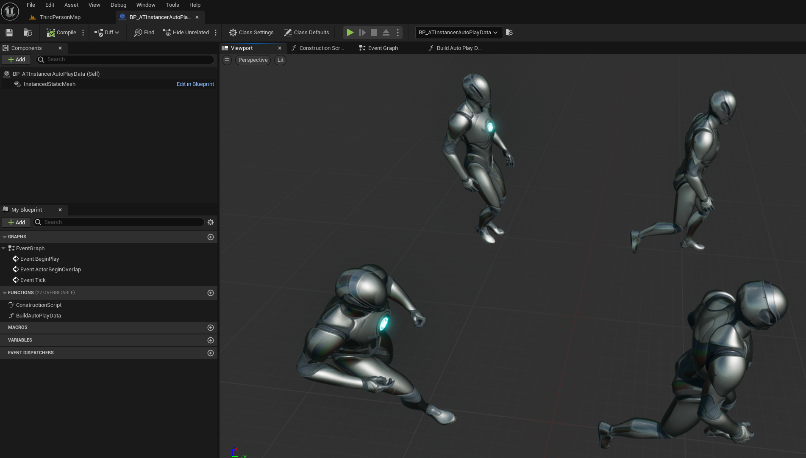
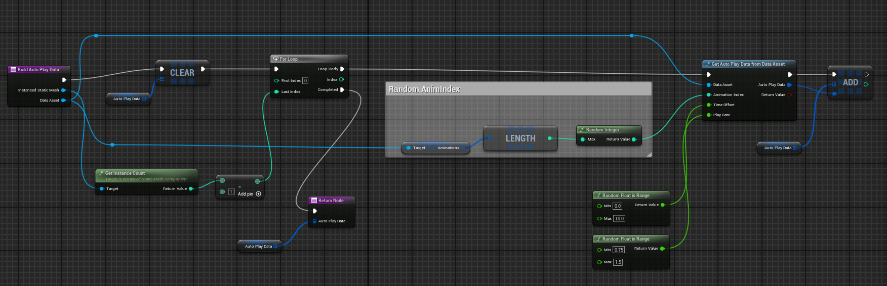
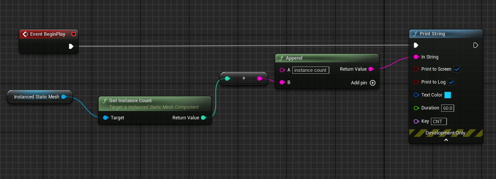

Using Animation Textures Characters from Blueprint
This article is part of a series detailing how to use the AnimToTexture plugin to animate static meshes.
Previous parts are:
The AnimToTexture plugin includes a blueprint which can be used to render static meshes using animation textures. This article shows how to use this blueprint to add animated meshes to your project.
The Blueprint
Make a new folder under /Content/ATMaterials called "ATTests" and under that make one called "ATBlueprints". This is where we will put the test blueprint and in the future tests using PCG and Niagara.
From /Engine/Plugins/AnimToTexture/Characters/Mannequin copy the blueprint BP_InstancerAutoPlayData to the ATBlueprints folder. Rename it to "BP_ATInstancerAutoPlayData".
Open BP_ATInstancerAutoPlayData:
- click on the root BP_ATInstancerAutoPlayData(Self) component and change the Data Asset property to DA_ATBoneAnimation
- click on the InstancedStaticMesh component and change the Static Mesh property to SM_ATMannySimple
The viewport should now show 4 instances of the SM_ATMannySimple doing randomly chosen animations:

How Does it Work
The blueprint uses two main functions, BuildAutoPlayData and BatchUpdateInstancesAutoPlayData.
Initializing using the BuildAutoPlayData function
This function, implemented in blueprint, looks like this:

This function gathers data for a number (default=4) of instances of the static mesh. For each instance it:
- uses a random number to choose an animation from the list of animations we added to the data asset
- assigns a random time offset so that all the animations do not start at the same time
- assigns a random playrate so the animations go at different speeds
- calls the C++ function GetAutoPlayDataFromDataAsset to create a small data structure and adds that structure to a list.
The structure is shown here:
struct FAnimToTextureAutoPlayData
{
GENERATED_USTRUCT_BODY()
// Adds offset to time
UPROPERTY(EditAnywhere, BlueprintReadWrite, Category = "AnimToTexture|Playback")
float TimeOffset = 0.0f;
// Rate for increasing and decreasing speed.
UPROPERTY(EditAnywhere, BlueprintReadWrite, Category = "AnimToTexture|Playback")
float PlayRate = 1.0f;
// Starting frame for animation.
UPROPERTY(EditAnywhere, BlueprintReadWrite, Category = "AnimToTexture|Playback")
float StartFrame = 0.0f;
// frame of animation
UPROPERTY(EditAnywhere, BlueprintReadWrite, Category = "AnimToTexture|Playback")
float EndFrame = 1.0f;
};
This just stores the 4 values (TimeOffset, PlayRate, StartFrame, EndFrame) read from the data object and randomly generated by the BuildAutoPlayData function.
BatchUpdateInstancesAutoPlayData
The blueprint's parent blueprint BPInstancedStaticMeshBase calculates positions for the static meshes, spreading them out over a specified area.
The BatchUpdateInstancesAutoPlayData function:
- copies the position data to the static mesh instances
- copies the FAnimToTextureAutoPlayData data (the frame offsets of the animation etc. ) to the static mesh instances
The UInstancedStaticMeshComponent component which holds all the instanced static meshes then plays the animation for each mesh based on the passed in data.
Testing
Once you have configured the BP_ATInstancerAutoPlayData blueprint you should be able to drop it onto the world map and configure the number of instances of the static mesh it creates.
If you add a simple log message to the blueprint you can display the number of instances being animated:

Reference
Unreal Engine 5 AnimToTexture Plugin, How to Use it to make Vertex Animation Textures for crowds This is a great video by Kevin Romond based on Unreal 5.2.
UE5 AnimToTexture plug-in This is a translation of an article originally in Japanese
Baking Out Vertex Animation Tutorial
Feedback
Please leave any feedback about this article here